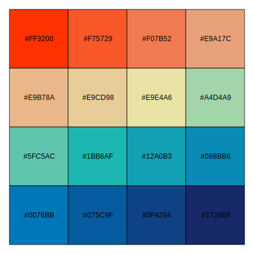

第 4 章 出版级图形
要达到出版级的专业图形，我们需要从配色、字体等方面再下功夫
4.1 配色
配色是快速提升图片美感的捷径，主要介绍一下基础调色板， colorspace，RcolorBrewer 和 viridis 三个用于配色的 R 包。除了上述要求外，还应在字体和图形质量上考虑
调制两个色板
n <- 16
# Colors from https://github.com/johannesbjork/LaCroixColoR
color_pal <- c("#FF3200", "#E9A17C", "#E9E4A6", "#1BB6AF", "#0076BB", "#172869")
color_pals_1 <- (grDevices::colorRampPalette(color_pal))(n)
scales::show_col(colours = color_pals_1)
# colors in colortools from http://www.gastonsanchez.com/
fish_pal <- c("#69D2E7", "#6993E7", "#7E69E7", "#BD69E7",
"#E769D2", "#E76993", "#E77E69", "#E7BD69",
"#D2E769", "#93E769", "#69E77E", "#69E7BD")
color_pals_2 <- (grDevices::colorRampPalette(fish_pal))(n)
scales::show_col(colours = color_pals_2)

图 4.1: 调色板
4.2 字体
xkcd 等字体
font_add_google("Alegreya Sans", "aleg")
font_add_google("Source Code Pro", "sourcecodepro")
font_add_google("Source Sans Pro", "sourcesanspro")
font_add_google("Source Serif Pro", "sourceserifpro")
font_add_google("Roboto", "roboto")
# Ubuntu Ubuntu Mono Ubuntu Condensed# library(showtext,quietly = TRUE)
# showtext.auto()
# pdf("google-fonts.pdf")
# font_add_google("Alegreya Sans", "aleg")
par(family = "serif")
plot(0:5,0:5, type="n")
text(1:4, 1:4, "Serif", font=1:4, cex = 2)
par(family = "sans")
plot(0:5,0:5, type="n")
text(1:4, 1:4, "Sans", font=1:4, cex = 2)
# dev.off()图 4.2: 两种字体
4.3 保存
图形设备，抗锯齿，颜色模式LAB，RGB，CMYK 适应展示设备需要
另外一个方法就是使用 cairo_pdf 而不是 pdf